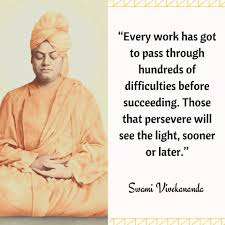
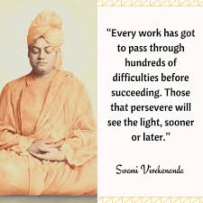

"Academic Success: Motivation encourages students to work diligently and excel in their studies, contributing to their academic success.
Personal Development: Motivation fosters a desire for personal growth, helping students acquire knowledge and skills that are essential for their future.
Innovation and Creativity: Motivated individuals are more likely to think creatively and come up with original ideas, reducing the temptation to copy someone else's work.
Self-Confidence: Motivation enhances self-confidence and self-belief, enabling students to express their ideas and opinions without the need to plagiarize.
Ethical Awareness: Motivation can lead to a heightened ethical awareness, making students more conscious of the importance of academic honesty and the consequences of plagiarism.
Critical Thinking: Motivation encourages critical thinking, which is essential for evaluating information and forming unique perspectives.
Achievement of Goals: Motivation is a driving force behind setting and achieving goals, making students less likely to resort to plagiarism as a shortcut.
Development of Work Ethic: A strong work ethic, driven by motivation, instills the value of hard work and determination, reducing the likelihood of plagiarism.
Long-Term Benefits: Motivation promotes a focus on long-term benefits, such as gaining knowledge and skills, rather than short-term gains through plagiarism.
Career Advancement: Motivated individuals are more likely to build a strong foundation for their careers, reducing the temptation to cut corners through plagiarism.
Positive Feedback: Encouragement and positive feedback for original work can further motivate individuals to create unique content.
Moral and Ethical Values: Motivation often aligns with strong moral and ethical values, which discourage plagiarism as it goes against these principles.
Independence: Motivated individuals strive for independence and self-reliance, reducing the need to rely on others' work through plagiarism.
Knowledge Retention: Genuine motivation to learn and understand the material increases knowledge retention and recall, making it easier to generate original content.
Adaptability: Motivated individuals are more adaptable and open to new challenges, reducing the desire to resort to plagiarism when faced with academic difficulties..

 
